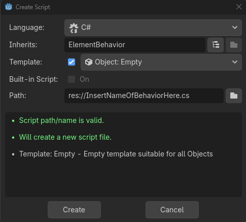
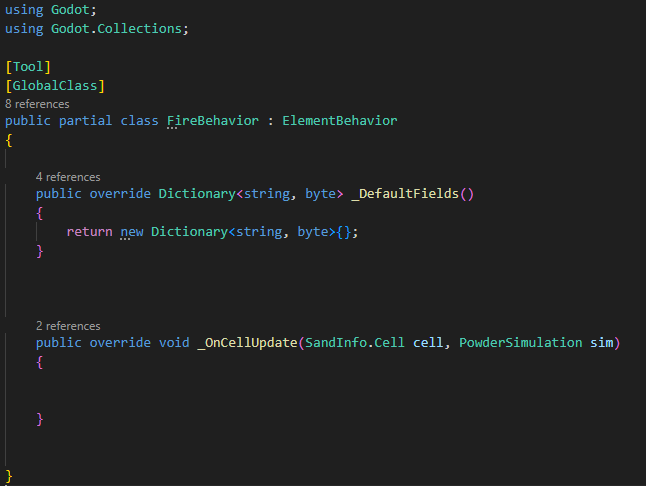

Making Custom ElementBehaviors
Making custom ElementBehaviors allows you to make more complicated elements and define their interactions with code.
Sections
See FireBehavior Explanation for an explanation on how this system was used to make the FIRE behavior.
Setting Up the Custom Behavior
There are three steps that need to be completed when creating an ElementBehavior-extending script.
-
Create a new C# script that extends
ElementBehavior. Open the newly created script. -
Add
[Tool]and[GlobalScript]somewhere above the class definition, which allow it to run in-editor and be recognized as a Resource respectively. -
Override the base ElementBehavior functions,
_OnCellUpdate()and_DefaultFields().
If your IDE's autocomplete adds something like_base.OnCellUpdate(), it is okay to remove it.
Note: You only have to override
_DefaultFields()if it is being used.Note #2: GDScript behaviors are not supported at the moment.

This is what the "Create New Script" menu should contain when making a new ElementBehavior Script.

This is what the base for your ElementBehavior class should look like. If you are not planning on using _DefaultFields(), it is okay to not include it.
Attaching to your Element
Once created, for the ElementBehavior to take effect, it needs to be applied to an element.
To attach your behavior to an element, you:
- Select your desired element.
- Change its Movement Preset to
CUSTOM. - Open the dropdown menu for the Custom Behavior field and select your behavior.

How to assign a behavior to an element. To apply the FireBehavior in this case, you would select the FireBehavior option from the dropdown.
Function Overrides
ElementBehaviors have two functions you can override to add custom interactions with the simulation. These are the functions you can override:
void _OnCellUpdate(SandInfo.Cell cell, PowderSimulation sim)
SandInfo.Cellcell - The cell object being updated.
PowderSimulationsim - The reference to the PowderSimulation node the cell is a part of.
This should always be overridden in most cases. This function gets called every time the cell updates (once per simulation tick). Use this function to move the element and change its properties using functions like the ones in the Cell Functions page.
Note: when changing values that would affect the visuals of a cell, like changing its element, make sure to mark the cell as updated by using
Cell.CellChunk.MarkCellUpdated(Cell).
Dictionary<string, byte> _DefaultFields()
This function is used for supplying the default fields for your element. Fields are properties unique to each instance of an element, and each field is limited to an unsigned byte(integer from 0-255) value. Fields carry over when a cell is successfully moved using Cell.TryMove().
To supply your own default fields, make this function return a new Dictionary<string, byte> with the keys being the name it will be accessed with, and the values being the default value for the field.
Special Name Cases
There are special prefixes you can add to the name of an field to make it initialize different things.
| Prefix | Effect |
|---|---|
| R# | Randomizes the default value every time it is accessed, with the range 0-[initial value], where [initial value] is the value assigned to the key with the R# prefix. |
Note: when accessing fields in _OnCellUpdate(), you must include the prefix in the name.
Ex.Cell.GetField("R#random")